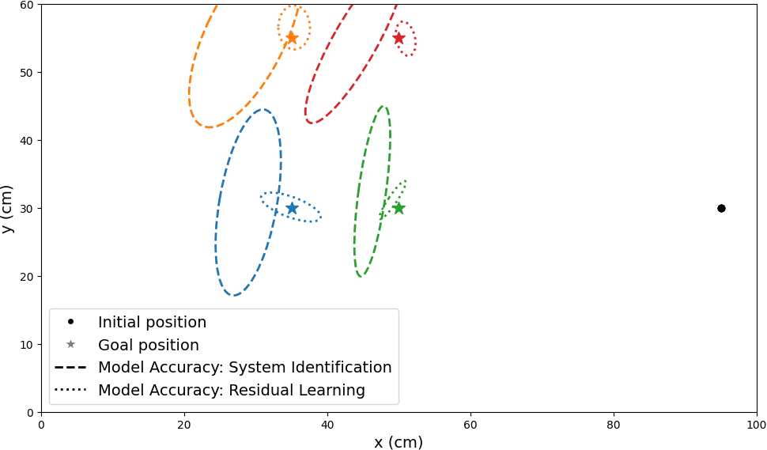

Key Results
We observe that the residual learning model reduces the mean error in stopping position from an average of 9.12 cm to 1.68 cm, or an 81.6% reduction, compared to the baseline system identification approach

Error Ellipses: System ID vs. Residual Learning
